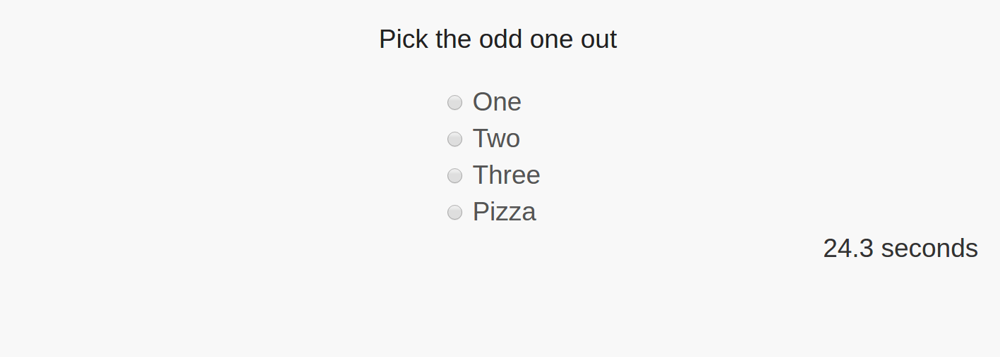

Pick the odd one out test
You will be presented with an MCQ problem of choosing the odd one out.
You must try to pick the option as fast as possible.
A timer will appear below the box to show how long you are taking.
Once you click the button below (or press enter), the test will load and the timer will have begun. You can start answering immediately.
Okay, start!
Example:

Pick the odd one out
{{option}}
{{elapsedSeconds.toFixed(1)}} seconds